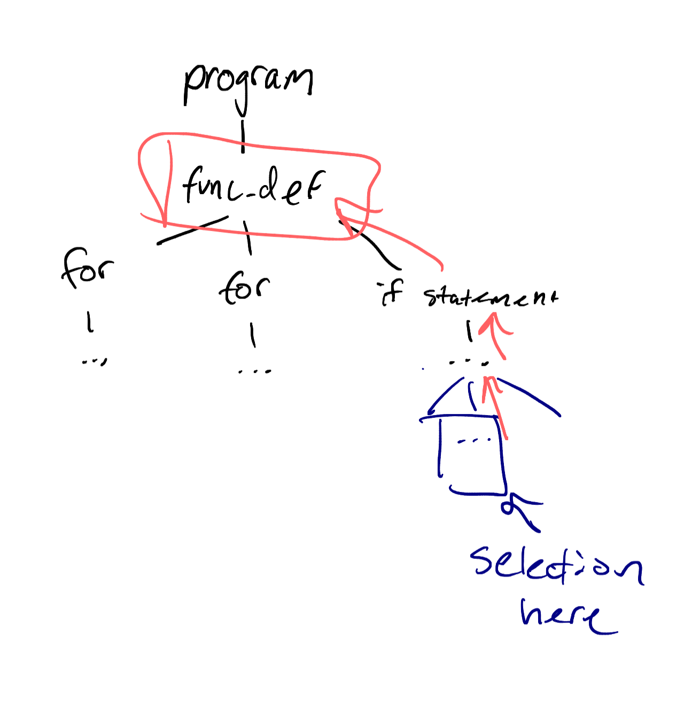

2025-05-15
Building BGB
Intro
We've all been there. Staring at a line of code, thinking: "Why is this
here? Who wrote this? What were they thinking?"
Enter git blame, a command to show the commit that last modified each
line in a file, who modified it, and when. But what if that last commit
was just reformatting? What if the real history behind a change was
several commits before? Traditional blame leaves a lot to be
desired--for me, a deeper history on how each piece of code evolved.
This is the core idea behind better-git-blame, to provide a more
comprehensive history of code selections.
I. Core Problem: Beyond Single-Line History
The goal is simple in concept: select a block of code and see a list of
every commit that ever modified those lines, not just its latest edit.
The breakthrough, as well as an oversight, came with discovering the -L
option for git log.
git log -L
-L <start>,<end>:<file>
-L:<funcname>:<file>
Trace the evolution of the line range given by <start>,<end>,
or by the function name regex <funcname>, within the <file>.
This first option allows us the see the commit history for a selection of
line. Perfect, isn't that exactly what we want? And here comes that
oversight I just mentioned. It will work as long as the changes we want to
see are in those lines but, more often than not, things will move around in
our code quite a bit during development. We'll ignore that for now (because
I didn't think about it until it was already implemented).
After a bit of experimenting I ended up finding the following command to
work quite well with providing the information I want.
git blame <start>,<end>:<file> --format=%H %ad %an %s
--date=format:%Y-%m-%d %H:%M:%S
II. Bringing it to Lua
And it turns out vim makes it quite easy, when you make a visual selection
it uses '< and '> as the line numbers of the selection range, so all I had
to do was use the line1 and line2 arguments when getting the selection.
-- get_visual_selection returns { file_path, start_line, end_line }
local selection = selection_utils.get_visual_selection(
args.line1,
args.line2)
Then, all we turn that into a git log -L command and parse the output. To do
this I used of plenary's job and path modules
M.get_commits(selection, repo_root, callback)
...
local git_args = { "-C", repo_root, "log", range_arg,
format_arg, date_arg }
Job:new({
command = "git",
args = git_args,
cwd = repo_root,
on_exit = vim.schedule_wrap(function(j, return_val)
-- return_val other than 0, callback(nil, stderr)
...
local commit_list = M.parse_git_log(j:result())
-- no commit list
...
callback(commit_list, nil)
end),
}):start()
end
M.parse_git_log(output_lines)
local pattern = "^([0-9a-f]+)%s+([%d-]+)%s+([%d:]+)%s+(.-)%s+(.*)$"
for _, line in ipairs(output_lines) do
local hash, date, time, author, message = line:match(pattern)
if hash and date and time and author and message then
-- insert into table
...
end
end
end
Running the git log -L command and parsing each commit line output, then
matching it to a regex pattern specified with the format option. The pattern
matches in order of commit hash, date, time, author, and commit message.
III. User Experience: Telescope ftw
Having the list of commits is one thing; presenting it usefully is another.
I knew from the start I wanted to integrate with a Telescope picker, to
provide an interactive, fuzzy-findable list.
function M.launch_telescope_picker(commit_list, repo_root, selection)
pickers.new({}, {
...
finder = finders.new_table({
results = commit_list,
entry_maker = function(entry)
-- trim hash to first 6 characters
local trimmed_hash = string.sub(entry.hash, 1, 7)
return {
value = entry,
display = string.format("%s (%s %s) | %s | %s",
trimmed_hash,
entry.date,
entry.time,
entry.author,
entry.message),
ordinal = entry.date .. " " .. entry.time,
}
end
}),
sorter = sorters.get_generic_fuzzy_sorter({}),
previewer = create_previewer(repo_root),
...
}):find()
end
We create a finder (the interactive list), a sorter for that list, and a
previewer which will be used to preview the commit and its changes.
The sorter works off of the ordinal set in the table, it will sort by date
first, then by time, giving us an in-order view of every change.
For the diff view I found fugitive to be the best option, diffview second.
The following block is to set the buffer preview window.
if vim.fn.exists(":Gvdiffsplit") == 2 then -- fugitive
vim.cmd("Gvdiffsplit " .. hash)
elseif vim.fn.exists(":DiffviewOpen") == 2 then --diffview
vim.cmd("DiffviewOpen " .. hash .. ".." .. hash .. " -- " .. file)
elseif vim.fn.exists(":Git") == 2 then
vim.cmd("tab Git show " .. hash)
else
vim.cmd("tabnew | term git -C " ..
vim.fn.shellescape(repo_root) .. " show " .. hash)
end
IV. I am stupid
At about this point I realized the line number mistake. I ended up taking a
bit of time to think about a good way to implement a way to read the actual
content of the selection and search based on that.
The options I came up with were a fuzzy, pickaxe, and regex search.
To explain a little bit about each, a fuzzy search is a way to find similar
results that don't exactly match a search query. This is by far the best
option, however it would make the search slower and be harder to implement.
A pickaxe search is a non-fuzzy search. Git log has an option that allows
you to search for an exact string (-S). This has its own drawbacks, mainly
being small changes in that line won't be found, or you may find extra
results if the string is not unique. But git log also has a regex option
(-G). This is not much better than pickaxe but it's better than searching
for an exact string match.
I ended up settling on the regex search for now, planning in the future to
integrate fzf or some other tool to do a fuzzy search.
I remember spending an entire evening trying to get the multi-line regex for
-G to work correctly, only to realize git grep processes each hunk
individually, meaning Git log doesn't allow you to search multiple line. So
I settled on the heuristic of choosing the longest line in the selection,
hoping that commits that change the surrounding lines also change that one.
Once we select the longest line we put it through a posix-escape function so
we can use it in the git log command
local function escape_posix_ere(text)
if not text then return "" end
text = text:gsub("\\", "\\\\")
text = text:gsub("%^", "\\^")
text = text:gsub("%$", "\\$")
text = text:gsub("%.", "\\.")
text = text:gsub("%[", "\\[")
text = text:gsub("%]", "\\]")
text = text:gsub("%(", "\\(")
text = text:gsub("%)", "\\)")
text = text:gsub("%*", "\\*")
text = text:gsub("%+", "\\+")
text = text:gsub("%?", "\\?")
text = text:gsub("{", "\\{")
text = text:gsub("}", "\\}")
text = text:gsub("|", "\\|")
return text
end
Which outputs a string that looks something like
vim\.notify\("No\s+file\s+name\s+associated\s+with\s+buffer",\s+vim\
.log\.levels\.WARN,\s+\{\s+title="BetterGitBlame"\}\)
Pump that into our git log -Glregexg function and we get every commit that
matches that regex. This allows for whitespace differences but is a far shot
from what I would consider useful enough to add to my workflow, which is
where the full fuzzy search comes in.
V. Treesitter the goat
While working on the command to integrate with git log -L with a function
name I had to think about how I would find what function a selection is in.
My solution to this was to find the smallest node that encompasses the
selection and iterate through its parent nodes until we find a function
declaration.

local cur_node = root:descendant_for_range(
target_start_line, target_end_line,
target_start_line, target_end_line
)
while cur_node do
if is_function_declaration_node(cur_node) then
-- update target selection lines
local body_start_line, _, body_end_line, _ = cur_node:range()
-- if function declaration is before the start of the selection
if body_start_line < target_start_line then
target_start_line = body_start_line
end
-- dont need to update end lines since its not in selection
end
cur_node = cur_node:parent()
end
for _, node, _ in query:iter_captures(
root, bufnr, target_start_line, target_end_line) do
local name = vim.treesitter.get_node_text(node, 0)
if not name_set[name] then
table.insert(names, name) -- insert function name into list
name_set[name] = true
end
end
The above snippet outlines how the search for function names. This approach
also allows us to find multiple function names in a selection and grab all
commits for those functions.
VI. Key Takeaways
Making this plugin was more than just creating something I could use in my
workflow. It ended up being a nice deep dive into several different areas in
development.
- The Git CLI is crazy in-depth
I thought I had a good understanding of git before this project. But
exploring the more nuanced corners and learning about all the different
options for git log felt like discovering I had superpowers. The level
of control Git gives you over output formatting is insance for
programmatic parsing. Don't underestimate the power of tools you use
regularly. There's an incredible depth waiting to be explored to unlock
new solutions.
- Telescope is awesome
I already knew this but yeah it's awesome as a generic UI framework.
Super customizable and an easy way to provide a consistent experience
for users.
- Debugging regexes sucks
Trying to design regexes for -G that were flexible enough to catch
variations in code structure ended up being a rabbit hole I couldn't
find my way out of.
VII. Shameless Promotion
Ty for reading. Check out better-git-blame.nvim and try it out
- Ethan